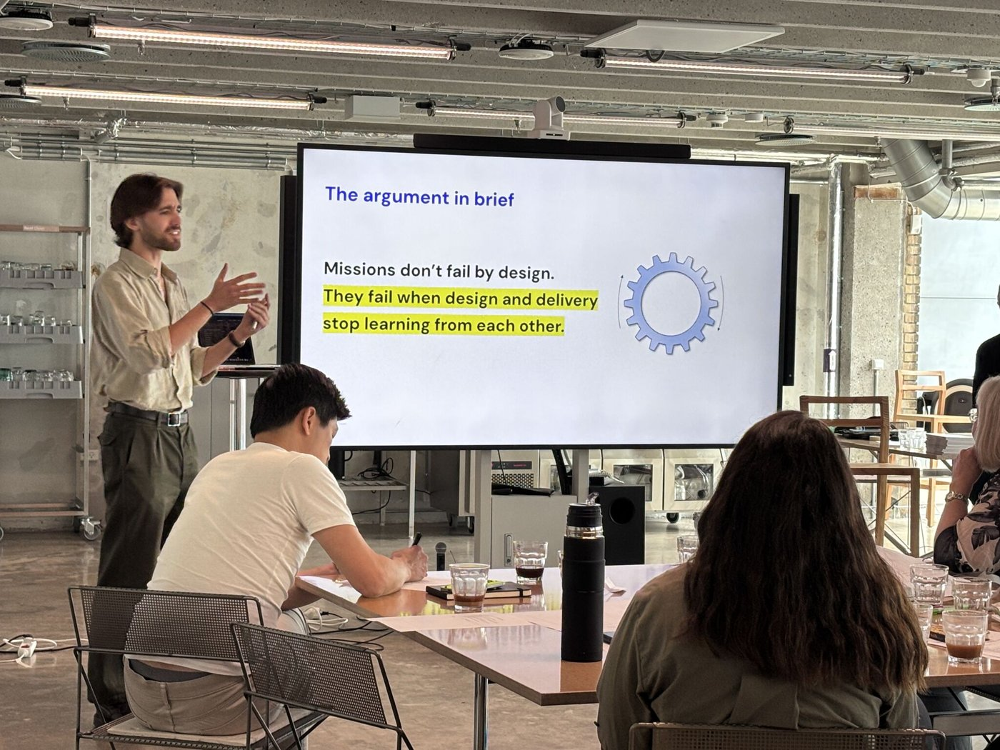

research

My current academic output revolves around the publication of my doctoral thesis: “Why missions fail – Rethinking European statecraft in the age of net-zero innovation policy”.
Since the 2015 Paris Agreement, Europe has attempted to decarbonise its economy with missions: ambitious policy initiatives aiming to transform whole industrial sectors in a clear timeframe. Thus far, the approach has fallen short of expectations. Research stresses macro-financial and meso-institutional obstacles. Yet, from a micro-administrative perspective, it remains unclear why European governments have regularly fallen into mission-washing: bold rhetoric without the capacity to deliver it.
My thesis explores this question by examining how public managers turn net-zero missions into administrative practice. It combines a Qualitative Comparative Analysis of 34 missions led by 12 governments with comparative process tracing of four most different cases: Danish agri-food, Dutch chemistry, British construction and French steel. Based on 232 interviews, 152 documents and 12 focus groups, it offers a formative assessment of European net-zero mission-oriented policy (2015-2025).
Where current research points either to inadequate bureaucratic structures or poor dynamic capabilities, I find a breakdown of political-administrative coordination. Political leaders boxed missions into a narrow innovation policy toolkit. Public managers tried to legitimise a broader remit by engaging stakeholders across regulation, infrastructure and investment. Yet, without political leadership, their policy impact remained peripheral. This suggests that mission delivery depends not only on higher funding or better design, but also on sustained leadership. In turn, this requires political-administrative coordination mechanisms capable of adapting public governance to different stages of implementation maturity.
The monograph offers a diagnostic framework for the formative assessment of mission-oriented policy implementation; the first systematic comparative analysis of European net-zero mission implementation; and three recommendations for practitioners. Key chapters have been published on Research Policy, Policy Design and Practice, and Science and Public Policy, with four additional manuscripts currently under preparation.